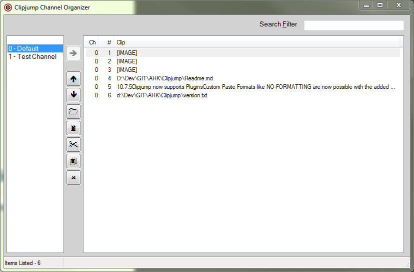

Channel Organizer
[v11+]

Channel Organizer shows data stored in various channels of Clipjump and performs basic functions to manage them.
It can be activated from the Action Mode using the key 'O' but the user can also create a system-level shortcut for it through the Settings Tool.
The left side list shows all the channels you have created with their channel numbers. The topmost item in the list i.e. the blank item shows clips of all the
channels when it is selected.
Users can right-click on the clip to view options that are available.
Many options have also been made accessible through buttons that are in between the
two lists. The buttons do the common functions for both channels as well as clips and the top horizontal arrow indicates the direction for which other buttons
will perform.
Options available like Insta-paste, preview, search are all inspired from the History Tool.
You can edit clip's tags and fixate status using the Properties option in Context Menu. Make fixed = 1 in Properties to enable FIXATE
option for a clip.
The Delete option currently doesn't support multi-selection so you will be available to delete only one item at a time.
Translate